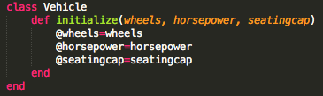
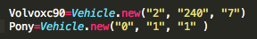

Classes in Ruby
One of the cool things I learned about Ruby is that just like methods, you can create your own classes. It's a bit hard to wrap your head around, but one way to look at it is with real objects. In the real world, most transportation that we use has similar functions, but widely different characteristics. We can think of all transportation falling under the class of vehicle.
If we were to make a class in Ruby it would be as simple as writing "Class Vehicle end." But we can include different characteristics within that class to help differentiate between all the different vehicle types. Things like number of wheels or horsepower or seating capacity.
Many classes start off with the method initialize followed by the characteristics of that class. Using the example above, you might see a Vehicle class set up like this:
The @ symbols are making local variables that can be used as a reference later in the program. Let's focus on how now that the class is set up to take information in, it still does nothing. You must create a new object of that class by doing the following:
In the picture above, I created two new objects in the Vehicle class and gave them characteristics of wheels, horsepower and seating capacity. While the Vehicle class still doesn't serve much purpose, when combined with other methods, it is possible to do all sorts of things to the data supplied, such as organizing it by highest horsepower, calculating how many vehicles would be needed to transport x amount of people and so forth.